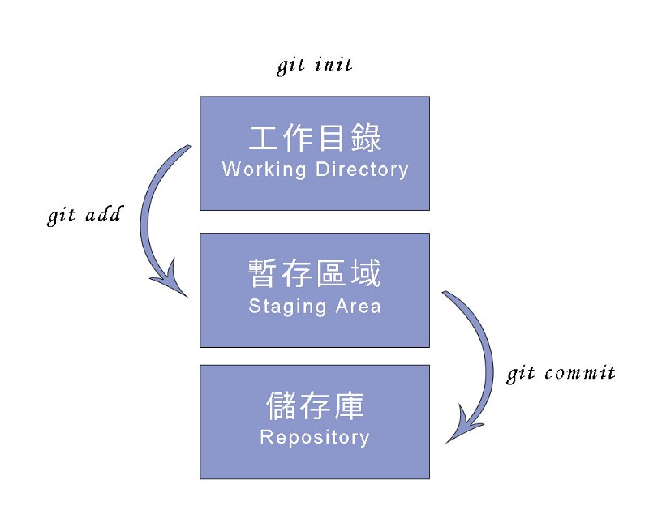

Git 學習筆記 (二) - Git基本指令 及 檢視、編輯檔案

四、Git 基本指令

1 | $ git init // 建立 Git 專案 |
五、檢視及查詢記錄
1. 檢視 commit 記錄
查詢所有檔案 commit 記錄
1
2
3
4
5
6
7
8
9$ git log // 檢視 commit 記錄
$ git log --oneline --graph // 檢視 commit 記錄(精簡)
$ git log --auther="Carol" // 查詢特定人 commit 記錄
$ git log --auther="Carol\|Mary" // 查詢特定人 commit 記錄
$ git log --grep="hello" // 查詢特定字 commit 記錄
$ git log --S "Carol" // 查詢 commit 檔案內容中與特定字有關的記錄
$ git log --sinde="9am" --until="12am" --after="2019-07"
// 查詢特定時間 commit 檔案內容中與特定字有關的記錄(可依需求省略)
$ git log -g // 檢視包含 reflog 的 commit 記錄查詢特定檔案 commit 記錄
1
2$ git log 檔名 // 查詢特定檔案 commit 記錄
$ git log -p 檔名 // 查詢特定檔案 commit 詳細記錄
2. 檢視檔案內容記錄
查詢特定檔案內容記錄
1
2$ git blame 檔名 // 查詢特定檔案內容記錄
$ git blame -L 5,10 檔名 // 查詢特定檔案特定行數內容記錄
3. 查詢 HEAD 移動記錄 ( reflog )
1 | $ git reflog // 查看過去指向 HEAD 的記錄 |
六、在 Git 中編輯檔案
1.刪除檔案
1 | $ rm index.html // 在系統中刪除檔案 |
2. 變更檔案
1 | $ mv 舊檔案 新檔案 // 檔案改名 (mv 等同 move) |
Git 學習筆記 系列文章